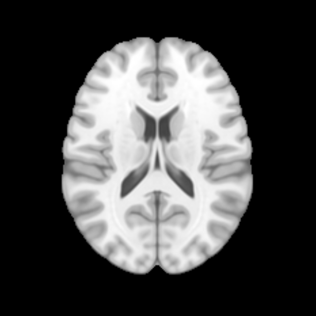

A hybrid CNN–Transformer that sorts a structural brain scan into Control, Prodromal, or Parkinson's — and shows where it looked.
Walk down the page to follow one scan from the archive to a prediction. Scrub, switch cohorts, and toggle the attention map as you go.
Scans come from the Parkinson's Progression Markers Initiative (PPMI): T1-weighted structural MRI from three groups the model learns to separate. Access needs a data-use agreement, so no raw scans are hosted here — the brain shown throughout is the open MNI152 template, for illustration.
Each scan is a 3D stack of slices. Rather than process the whole volume, the model takes the middle axial slice — one representative 2D image. Scrub the stack: the highlighted frame is the slice that goes forward.
Before the network sees it, the slice is standardised so every scan is comparable.
Volumes are registered to the MNI PD25-T1MPRAGE (1 mm) template in MATLAB; the single-channel slice is duplicated across RGB for ResNet18. Training-only augmentation: rotation ±10°, horizontal flip, colour jitter, and affine shifts.
The 2D slice passes through ResNet18. Each block shrinks the image spatially and deepens it into more feature channels — capturing local structure: edges, tissue boundaries, shapes.
ResNet18 (ImageNet-pretrained), with the fully-connected head removed, ending in a 512-channel feature map (7×7×512). The stacks show feature maps shrinking spatially and deepening in channels — hover a layer to watch its maps recompute.
The feature map is flattened into a sequence of tokens (one per spatial position), given positional encodings, and passed to a Transformer encoder (6 layers, 8 heads). Self-attention lets any region influence any other — long-range relationships a CNN alone can't capture.
The 7×7×512 feature map is flattened to 49 tokens (d = 512) with positional encodings, then passed through 6 encoder blocks — each: multi-head self-attention (8 heads) → Add & Norm → feed-forward (dropout) → Add & Norm. Global average pooling (no CLS token) → dropout p = 0.5 → fully-connected head → the three classes.
A classification head turns the Transformer's output into three probabilities. Pick an example cohort to see a typical prediction, and toggle the attention map to see which regions of the slice drove it.

Predicted: Control
Slightly lower precision, but clearly higher recall and F1 — the balance that matters most in a clinical screen. Axis 70–85%.
Next step: region-level interpretability — showing which brain area drives each prediction. The published model reports classification only and notes this as future work.